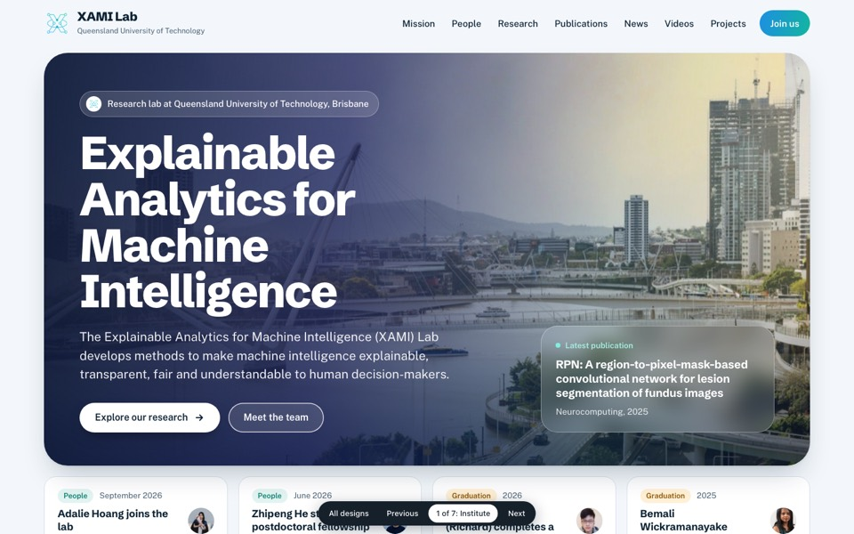
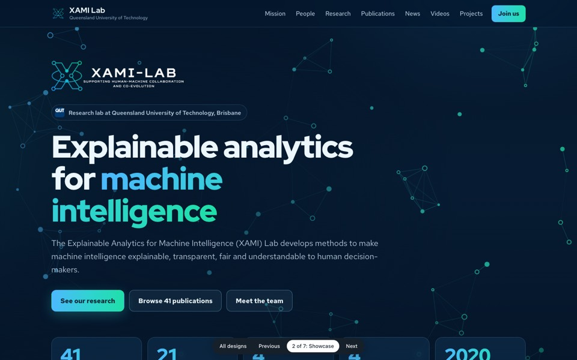
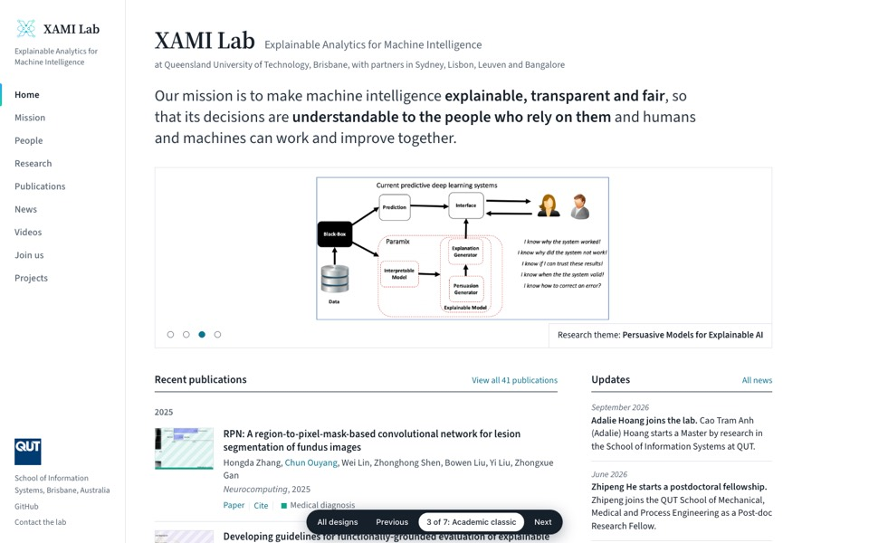
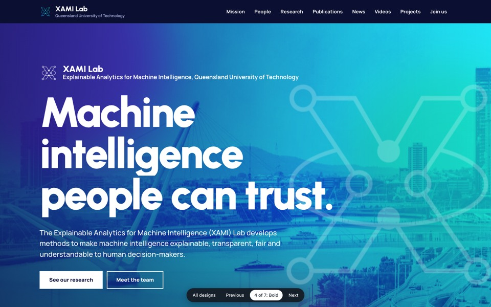
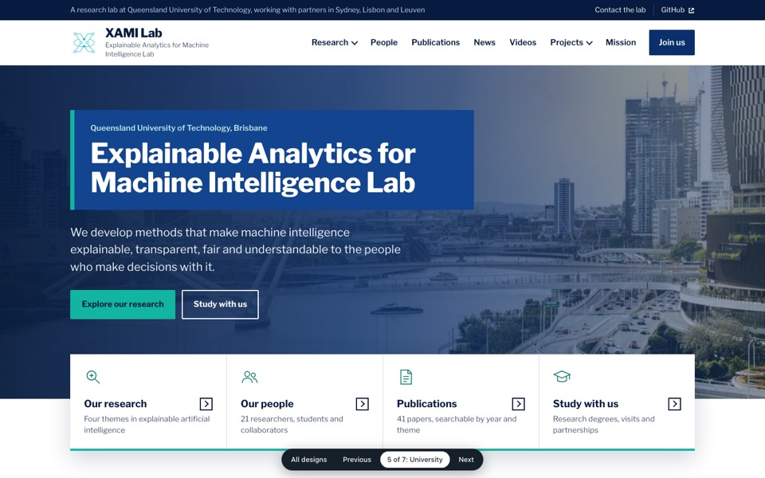
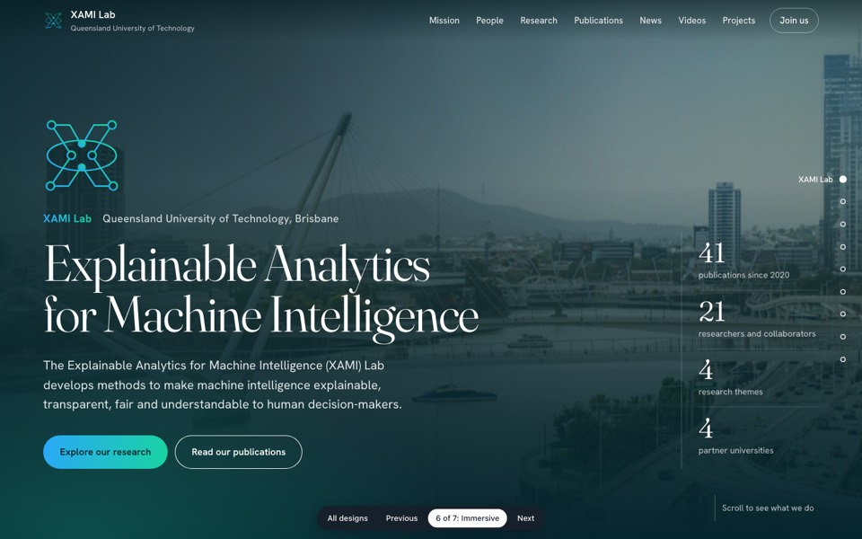
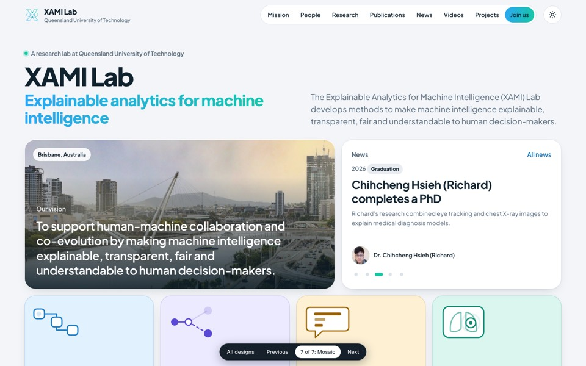

Seven designs for the new XAMI Lab website
Each one is a complete lab website with its own look, layout and way of moving. All of them use the lab's real people, papers and research themes.
Open each one and use it as a visitor would. The menus work, so you can visit the people, publications, research and news pages in every design. The bar at the bottom moves to the next design.
The designs
-

1 Institute
A modern institute site: large city photo with the mission, a news strip, and big colour sections for research, people and publications.
Fits if the lab wants to look established and outward facing.
-

2 Showcase
A dark, high-tech site with a moving network behind the title, key numbers, the team's faces and grids of papers per theme.
Fits if the lab wants to show off its output and look like an AI lab.
-

3 Academic classic
A compact site with a side menu, the mission in one sentence, and publications with thumbnails next to dated updates.
Fits if the main visitors are researchers who come for the papers.
-

4 Bold
An expressive site with a vivid moving colour field, very large type, tall image tiles for the themes and a news ticker.
Fits if the lab wants a strong, memorable identity.
-

5 University
A formal site with a two-level header, dropdown menus, a photo banner and research themes as image cards.
Fits if the lab wants to look trustworthy to funders and industry partners.
-

6 Immersive
A cinematic home page of full-screen scenes: the city, the mission, one screen per research theme, then people and papers.
Fits if the lab wants to tell its story and impress on first visit.
-

7 Mosaic
The whole lab at a glance in a grid of tiles of different sizes, with a light and dark appearance.
Fits if the lab wants a fresh, contemporary look that is quick to scan.